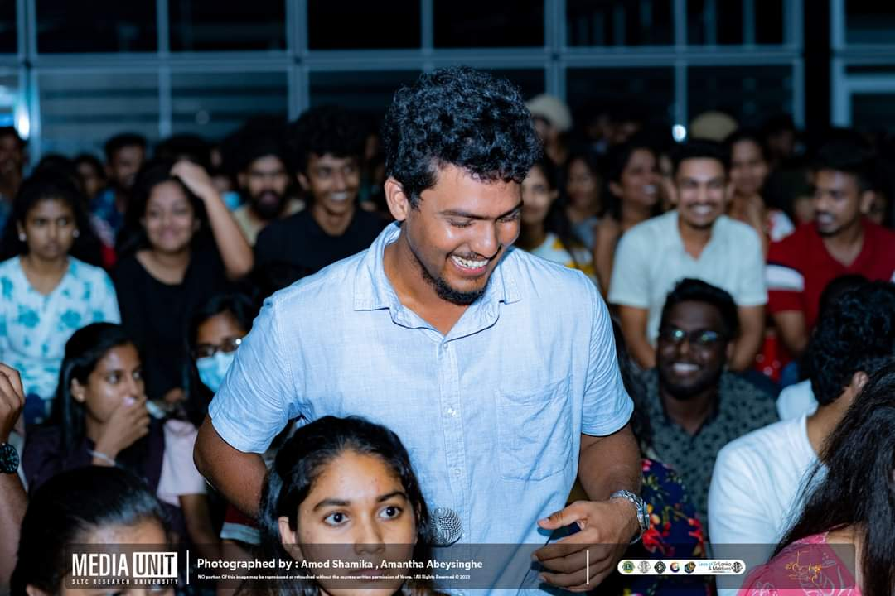

Volunteering & Leadership
My contributions to community and campus organizations
Founder President - Hope Charity Club
Led over 25 impactful charity projects focusing on children, pregnant mothers, and community helpers, creating lasting social benefits.


Vice President - SLTC Media Unit (2025)
Leading media coverage and communications to promote student activities and events.


Compering Head - SLTC Media Unit (2023/24)
Managed event hosting and live announcements, ensuring professional delivery and audience engagement.



Rugby Player - SLTC Rugby Team
Active team member promoting teamwork and competitive spirit.

2nd Vice President - Leo Club of SLTC (2023/24)
Supported leadership and service projects within the Leo Club.

Membership Development Head - IEEE Student Branch (2023/24)
Enhanced member engagement and growth in the technical student community.